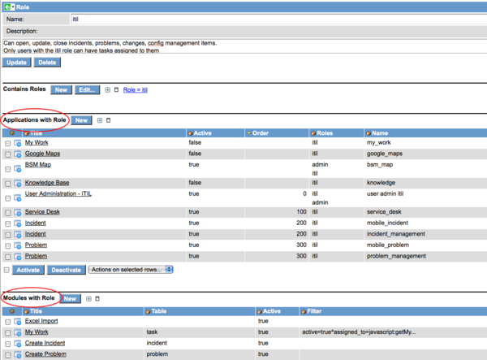

Winter 2010 Notable Changes
The following are notable changes you may encounter with our Winter 2010 release. Not necessarily problems, not necessarily major features, just things or behaviors you may notice being different than before.
Contents
- 1 Changes for Winter 2010
- 1.1 Impersonate button can be disabled
- 1.2 Numbers are always padded
- 1.3 Ctrl+m expands and contracts the main frame
- 1.4 Catalog variable tree pickers and Advanced Reference Qualifiers
- 1.5 "Go to" default behavior can be changed
- 1.6 Additional "Go to" prefixes
- 1.7 SOAP queries and inactive fields
- 1.8 sc_req_item ACL
- 1.9 Timezone Changer UI Macro
- 1.10 History page changes
- 1.11 CMS demo plugins
- 1.12 "Last Discovered" field on cmdb_ci no longer audited
- 1.13 Legacy Activity Formatter removed
- 1.14 One-click export of an Update Set
- 1.15 SOAP response display values
- 2 Changes for Fall 2009 Stable 3
- 2.1 Updated property descriptions
- 2.2 Font size changer upper limit
- 2.3 Surveys questions can be mandatory
- 2.4 Workflow cancellation changes
- 2.5 Numbering changes
- 2.6 Ctrl + Right-click to show browser's context menu
- 2.7 Knowledge portal performance improvement for large knowledge bases
- 2.8 Security Properties page reorganization
- 2.9 Welcome stripe dropdown toggle
- 2.10 Domain Support Plugin changes
- 2.11 View Support for SOAP Queries
- 3 Changes for Fall 2009 Stable 2
- 3.1 Report views are tracked
- 3.2 "Go to line" decoration for script fields
- 3.3 Consolidated Collapse All/Expand All icons for multi-section forms
- 3.4 Option to dynamically resize Import Set table columns as necessary
- 3.5 Controlled Domain cache flushes
- 3.6 Workflow "Task" activity renamed to "Create Task"
- 3.7 Transaction logging threshold implemented
- 3.8 Maximum run time for a Discovery
- 3.9 Duplicate Knowledge icon removed
- 3.10 Catalog and Knowledge search results limit
- 3.11 olap_cubulator moved to a UI Page
- 3.12 Task Survey plugin enhancement
- 3.13 CPU and Memory measurement improved in Discovery
- 3.14 Email Client enhancement to prefer SMS
- 3.15 Calendar report "Highlight Based On" enhancement
- 3.16 Ability to case-sensitive coalesce an import set
- 3.17 Display Role Relationships to Applications and Modules
- 3.18 00:00:00 in a glide_time field is stored as null
- 4 Changes for Fall 2009 Stable 1
- 4.1 Node Based Metric Collection
- 4.2 Text index autorepair
- 4.3 Disable Labels with a property
- 4.4 Attachment links only on first form section
- 4.5 Reference field displayed as choice list threshold
- 4.6 Attachment security logic change
- 4.7 (empty) vs. NULL in charts
- 4.8 Limit attachment size
- 4.9 Reference links in Email Notifications
- 4.10 Script the Subject of an emailed report
- 4.11 Faster adding of database columns
- 4.12 Cluster nodes get their own performance stats
- 4.13 Approval with E-Signature Plugin now admin-installable
1 Changes for Winter 2010
1.1 Impersonate button can be disabled
The glide.ui.impersonate_button.enable UI Property can be used to disable the impersonation capability.
1.2 Numbers are always padded
If the sys_number.maximum_digits field has a value for a table, number for that table are always padded to that length.
1.3 Ctrl+m expands and contracts the main frame
In Firefox and IE, Ctrl+m will expand and contract the main frame, useful for small displays.
1.4 Catalog variable tree pickers and Advanced Reference Qualifiers
Advanced reference qualifiers are now supported on tree pickers inside of catalog variables.
1.5 "Go to" default behavior can be changed
The "glide.ui.goto_use_contains" property can be created in an instance. If true, the Go to navigation will do a "contains" query instead of a "greater than" query by default.
1.6 Additional "Go to" prefixes
Three additional "Go to" query prefixes have been added:
- = - will do an equals query on the selected field
- > will do a greater than or equal to query
- < will do a less than or equal to query
1.7 SOAP queries and inactive fields
Inactive fields (specified with the Active flag on the Dictionary record) will not be returned in response to SOAP queries.
1.8 sc_req_item ACL
The "read" ACL for the sc_req_item table was modified to allow users to see items ordered for them by another individual.
1.9 Timezone Changer UI Macro
To accommodate the revised ui_timezone_changer UI Macro for customers who had previously modified theirs, if a customized UI Macro is found it is renamed to ui_timezone_changer_old. If it was active, the new ui_timezone_changer UI Macro is automatically activated.
1.10 History page changes
The History page header has been consolidated for ease of readability. Before and After columns exhibit more consistent formatting.
1.11 CMS demo plugins
The number of Content Management System demo packages has been reduced to two. The Compass CMS theme was removed.
1.12 "Last Discovered" field on cmdb_ci no longer audited
The "Last Discovered" field on cmdb_ci is no longer audited to reduce log pollution.
1.13 Legacy Activity Formatter removed
The legacy Task Activity Formatter was removed and replaced in all instances with the newer Activity Formatter.
1.14 One-click export of an Update Set
An update set can be exported and saved to a local hard drive with a form link UI Action at the bottom of the form. The saved .xml file can be uploaded to another instance if desired.
1.15 SOAP response display values
Display values are now supported in SOAP responses. Details here
2 Changes for Fall 2009 Stable 3
2.1 Updated property descriptions
Several properties had their descriptions updated for clarity and consistency.
2.2 Font size changer upper limit
An upper limit of 18pt was placed on the font size changer.
2.3 Surveys questions can be mandatory
Surveys will now enforce mandatory questions.
2.4 Workflow cancellation changes
- When a Task Activity is cancelled, the state is now set to 'cancelled' instead of 'finished'.
- When a workflow is cancelled, the pending task is marked as 'Closed Incomplete'.
2.5 Numbering changes
- getNextObjNumber() was replaced by getNextObjNumberPadded() for record numbering.
- For consistency with getNextObjNumber(), getNextObjNumberPadded() now walks up the hierarchy. e.g., if no sys_number Number Maintenance record exists for change_request, the one for task will be used.
- getNextObjNumber(), if still used, will now pad the number with leading zeroes as specified by the maximum_digits field on the corresponding sys_number record.
In places where right-clicking displays a ServiceNow context menu, pressing the Ctrl key while right-clicking will instead display the browser's context menu.
2.7 Knowledge portal performance improvement for large knowledge bases
Knowledge Base portal performance (kb_home.do) has been improved for instances with a large number of articles per role.
2.8 Security Properties page reorganization
The Security Properties page has been reorganized for ease of use.
2.9 Welcome stripe dropdown toggle
A toggle image has been added to the Welcome Stripe (near the Logout button) to hide/show a user's set of welcome stripe dropdowns like domain picker, timezone picker, language picker, etc. The toggle state is saved as a user preference.
2.10 Domain Support Plugin changes
The Domain Support Plugin was split into separate plugins. This was done to accommodate customers who wanted to restrict the functionality by enabling only the part they needed.
2.11 View Support for SOAP Queries
There is new support for specifying a form view name to limit or extend the response elements of SOAP queries. More information here
3 Changes for Fall 2009 Stable 2
3.1 Report views are tracked
Report viewings are now tracked. The report_view event is thrown when a report is viewed, and a script action adds a row to the new report_view table that indicates who viewed what and when. A distinction is made between a direct report view through the Reports portal and a view from a homepage.
3.2 "Go to line" decoration for script fields
A "Go to line" decoration has been added to the header of script fields. When clicked, it prompts the user for the line to go to. This capability is not currently supported if the JavaScript Editor plugin is used.
3.3 Consolidated Collapse All/Expand All icons for multi-section forms
For a multi-section form, the Expand All and Collapse All icons have been consolidated into a single icon. Click once to collapse all, click again to expand all.
3.4 Option to dynamically resize Import Set table columns as necessary
An option has been added to dynamically resize columns in an Import Set table. To enable this option for a Data Source, add the following attribute to the Properties field: dynamic_field_resize=true
Note that this may dramatically increase database activity during the import, potentially impacting performance, if columns are resized for very large tables.
3.5 Controlled Domain cache flushes
When an import or script results in multiple individual Domain cache flushes, the cache flushes are deferred until the end of the operation to protect performance.
3.6 Workflow "Task" activity renamed to "Create Task"
In Graphical Workflow, the "Task" activity has been renamed to "Create Task".
3.7 Transaction logging threshold implemented
A limit was implemented on the number of log statements any one transaction can issue to reduce the impact a single transaction can have on an instance or server's storage. The glide.transaction.max_logs property controls this threshold, and the default value is 50000 log statements.
3.8 Maximum run time for a Discovery
A feature was added to Discovery to specify a "max run time" for any schedule. If a scheduled discovery has a max run time, and if the discovery takes longer than the max run time, the remainder of the discovery is cancelled.
3.9 Duplicate Knowledge icon removed
If a field has the knowledge_custom attribute, only the Custom Knowledge Search icon will be rendered for the field. Previously both that icon and the normal Knowledge Search icon were rendered, leading to confusion related to duplicate icons.
3.10 Catalog and Knowledge search results limit
A limit has been put on Catalog and Knowledge search results using the "glide.ui.text_search.rowcount" property, also used by the Global Text Search capability. Default value is 10.
3.11 olap_cubulator moved to a UI Page
The olap_cubulator page was converted to a UI Page. This means that it can be secured with a "read" ACL if desired.
3.12 Task Survey plugin enhancement
Add ability to specify days to wait before sending another survey on the condition record itself with the new control_internal field. The global property value will still be used if control_interval is not specified for a condition.
3.13 CPU and Memory measurement improved in Discovery
The CPU and Memory values for computer CIs can be rounded to a measurement determined in the Discovery properties. For example, a 5 MHz of rounding in CPU measurement would result in 3.205 GHz when the data gathered by the probe(s) was 3.204 GHz.
3.14 Email Client enhancement to prefer SMS
An option was added to allow the email client to preferentially send to users' SMS device if they have one. This option is turned on with the "glide.email_client.show_sms_option" property.
3.15 Calendar report "Highlight Based On" enhancement
A calendar report will now show "Highlight Based On" fields for extended tables. Previously only task-level fields with styles could be highlighted.
3.16 Ability to case-sensitive coalesce an import set
The ability was added to use a case-sensitive coalesce when running an import set.
3.17 Display Role Relationships to Applications and Modules
Two new related lists are available on the role form to display which applications and modules have that role defined.

{kind=link}
3.18 00:00:00 in a glide_time field is stored as null
If a glide_time field is saved with a value of 00:00:00 or (empty), a null value is stored. When displayed, a null time is displayed as 00:00:00 (midnight). Previously, a null value was displayed empty in the UI.
4 Changes for Fall 2009 Stable 1
4.1 Node Based Metric Collection
Prior to Fall 2009 Stable 1, a limited set of instance metrics were collected against a business service named "This ServiceNow Instance". As of Fall 2009 Stable 1, the name of that instance has been changed to match your cluster name in the pattern hostname.instance_port. Data collected in the previous set of graphs is still present for historical reporting, but all new data will be collected under the revised graph and CI name.
4.2 Text index autorepair
Should a text index become corrupted for any reason, it will be automatically regenerated.
4.3 Disable Labels with a property
The new "glide.ui.label.enable" property in System Properties --> UI Properties allows an admin to disable the use of labels throughout the instance. The property description is, "Enable use of labels (Most Active, Most Recent, user created, etc.)"
4.4 Attachment links only on first form section
On a form with multiple form sections, attachment links are displayed only on the first section. Previously they were displayed on each form section.
4.5 Reference field displayed as choice list threshold
When a reference field is displayed as a choice list, if there are more than 25 entries the interface will revert to that of a reference field. This threshold can be customized with the glide.ui.max_ref_dropdown property instance-wide. Further, the instance threshold can be overridden with a max_ref_dropdown attribute on a specific reference field. e.g., a field attribute of max_ref_dropdown=100 on a reference field displayed as a choice list will use the choice list UI for fewer than 100 referenced records.
4.6 Attachment security logic change
Access to add an attachment checks create ACLs for the sys_attachment table. Default is that a user must be able to write to a record in order to add an attachment. Access to delete an attachment checks write ACLs for the sys_attachment table. Default is that a user must be able to write to a record in order to delete an attachment. Access to read an attachment checks read ACLs for the sys_attachment table. Default is that a user must be able to read a record in order to see an attachment.
4.7 (empty) vs. NULL in charts
In the new reporting engine (included with the Custom Charts plugin, the "NULL" label has been replaced with "(empty)" in bar/pie charts.
4.8 Limit attachment size
The new com.glide.attachment.max_size property specifies the maximum attachment size that will be accepted in megabytes. Property description is, "Maximum file attachment size in megabytes".
4.9 Reference links in Email Notifications
Adds the ability to add a reference link to an email notification. This outputs a link to a referenced record with the record's display value as the link text. For example, in an Incident email notification, the syntax to provide a link to the assigned_to person's user record is ${assigned_to.REF} which will output a link to the user record with the user's display name as the link text, e.g. "David Loo".
4.10 Script the Subject of an emailed report
When configuring a Scheduled Report, the Subject line now accepts JavaScript. e.g., the following in the Subject of a scheduled report will put the current date in the resultant email for an example report of today's problems:
javascript:"Problems created on " + gs.now();
4.11 Faster adding of database columns
The speed of adding new columns to the database has been improved.
4.12 Cluster nodes get their own performance stats
Each node in a cluster now gets its own set of performance statistics (transactions, database response, throughput, etc.).
4.13 Approval with E-Signature Plugin now admin-installable
The Approval with E-Signature Plugin is now installable by admins.
Contents > Release Notes > Legacy Versions > Winter 2010
Fall 2009 Stable 1
Fall 2009 Stable 2
Fall 2009 Stable 3